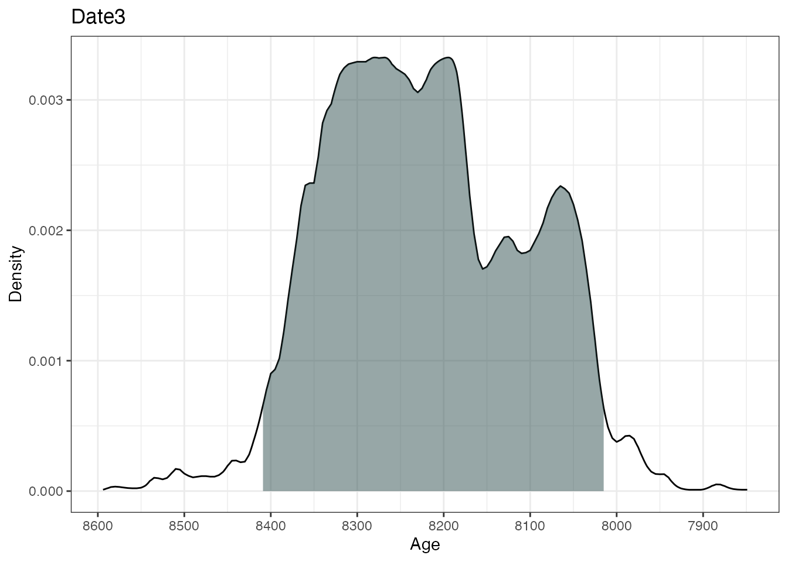
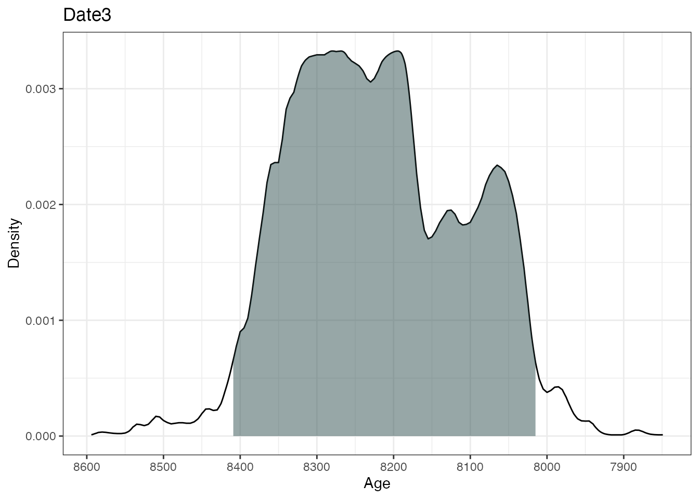
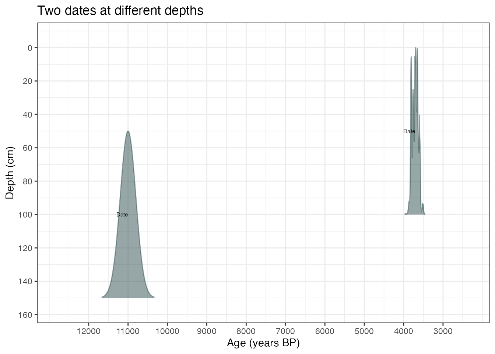
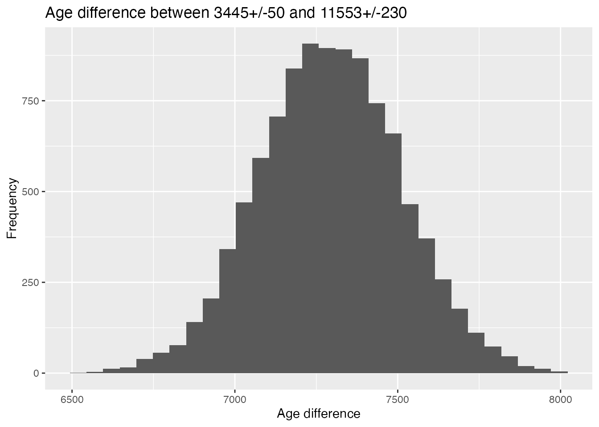
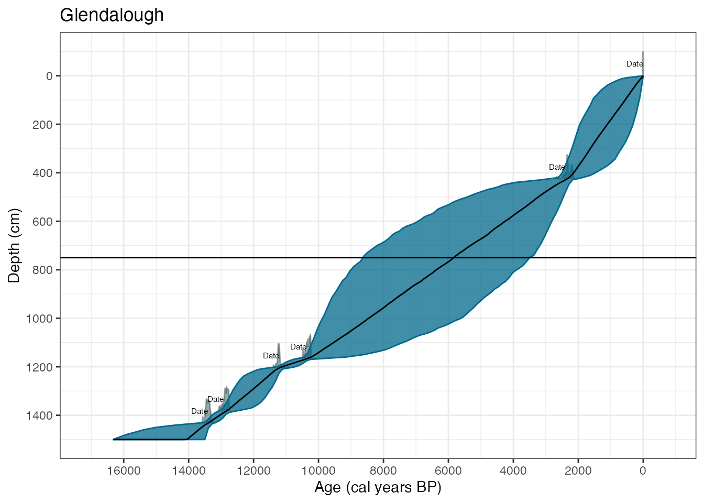
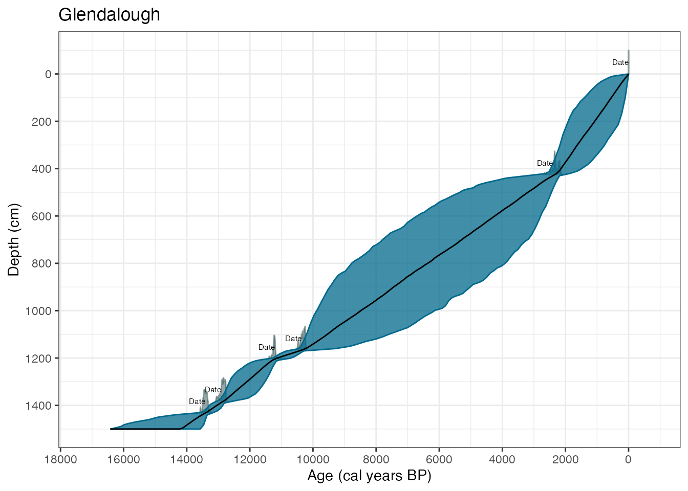
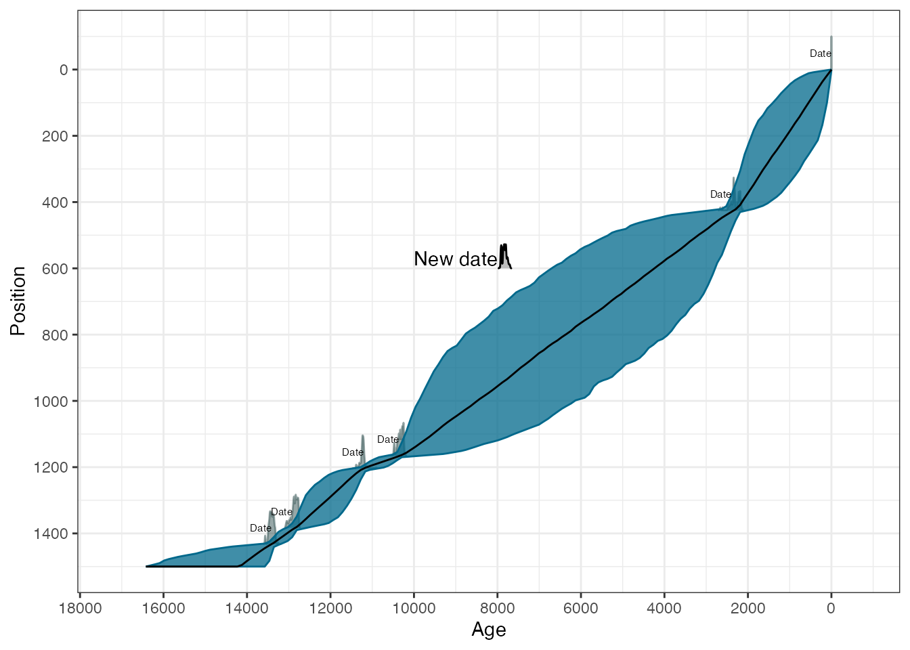
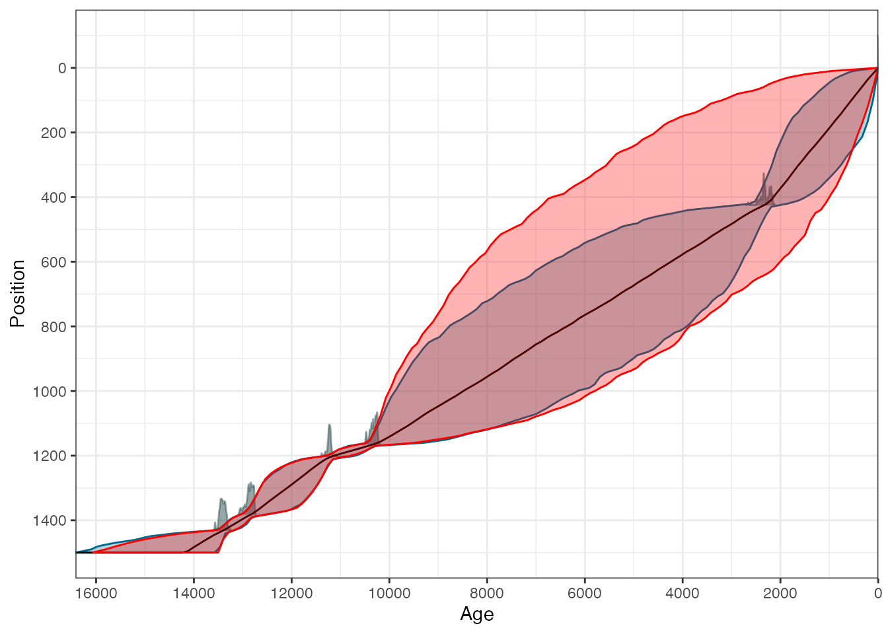

Using Bayesian radiocarbon chronology package Bchron
Andrew Parnell
2025-06-05
Source:vignettes/Bchron.Rmd
Bchron.RmdIntroduction
Bchron is an R package that enables quick calibration of radiocarbon dates under various calibration curves (including user generated ones); age-depth modelling as per the algorithm of Haslett and Parnell (2008); Relative sea level rate estimation incorporating time uncertainty in polynomial regression models (Parnell and Gehrels 2015); non-parametric phase modelling via Gaussian mixtures as a means to determine the activity of a site (and as an alternative to the Oxcal function SUM; currently unpublished), and reverse calibration of dates from calibrated into un-calibrated years.
You will find Bchron far easier to use if you know some basics on how to use R. I recommend the book by Norman Matloff amazon.co.uk link, or the online courses by Pluralsight
If you find bugs or want to suggest new features please visit the Bchron GitHub issues page.
Installing Bchron
Bchron will run in Windows, Mac OS X or Linux. To install Bchron you first need to install R. I would also recommend installing Rstudio as a nice desktop environment for using R. Once in R you can type:
at the R command prompt to install Bchron. If you then type:
it will load in all the Bchron functions.
If you want to install the development version of Bchron please visit the Bchron GitHub page. The GitHub version contains a few more features but some of these can be quite untested, and occasionally this version will break when it is in the process of being updated.
Calibrating radiocarbon dates
Bchron will calibrate single or multiple dates under multiple (even user defined) calibration curves. By default, the intcal20, shcal20 and marine20 calibration curves are included (as are older calibration curves such as intcal13). You can calibrate a single radiocarbon date with, e.g.
ages1 <- BchronCalibrate(
ages = 11553,
ageSds = 230,
calCurves = "intcal20",
ids = "Ox-123456"
)
summary(ages1)## 95% Highest density regions for Ox-123456
## $`0.4%`
## [1] 13004 13025
##
## $`77.9%`
## [1] 13059 13874
##
## $`16.4%`
## [1] 13923 14012
This will calibrate the radiocarbon age of 11,553 14C years BP with
standard error 230 14C years on the intcal20 calibration curve. The
id given is optional and only used for summarising and
plotting. The summary command then gives the highest density regions of
the calibrated date and the plot command produces a simple plot of the
density, together with a shaded region for the 95% highest density
region.
Bchron can calibrate multiple dates simultaneously by inputting the dates as vectors:
ages2 <- BchronCalibrate(
ages = c(3445, 11553, 7456),
ageSds = c(50, 230, 110),
calCurves = c("intcal20", "intcal20", "shcal20")
)
summary(ages2)
plot(ages2)
 

This will calibrate three different 14C ages with the calibration
curves as specified in the calCurves argument. The
summary and plot commands will produce
individual highest density regions and density plots for the three
dates.
You can plot individual dates from a calibration of multiple dates by name or number, e.g.
If you provide position information (e.g. depths) to the BchronCalibrate function it will create a plot with position on the y-axis, e.g.:
ages3 <- BchronCalibrate(
ages = c(3445, 11000),
ageSds = c(50, 200),
positions = c(100, 150),
calCurves = c("intcal20", "normal")
)
summary(ages3)## 95% Highest density regions for Date1
## $`94.4%`
## [1] 3572 3834
##
##
## 95% Highest density regions for Date2
## $`94.7%`
## [1] 10606 11394
… or change the axes/titles if you want:
library(ggplot2)
plot(ages3) +
labs(
x = "Age (years BP)",
y = "Depth (cm)",
title = "Two dates at different depths"
)
… or change to BC/AD
plot(ages3, ageScale = "bc", scaleReverse = FALSE) +
labs(
x = "Age (years BC/AD)",
y = "Depth (cm)",
title = "Two dates at different depths"
)… or add the calibration curve into the plot
… or add multiple dates into the calibration curve plots
ages4 <- BchronCalibrate(
ages = c(3445, 11553, 7456),
ageSds = c(50, 230, 110),
calCurves = rep("intcal20", 3)
)
plot(ages4, includeCal = TRUE, fillCol = "orange")
Credible intervals
If, alternatively, you want a credible interval (i.e. a
single contiguous range) rather than an HDR, you could use the
sampleAges function:
# First create age samples for each date
age_samples <- sampleAges(ages3)
# Now summarise them with quantile - this gives a 95% credible interval
apply(age_samples, 2, quantile, prob = c(0.025, 0.975))## Date1 Date2
## 2.5% 3569 10597
## 97.5% 3834 11398The sampleAges function introduces some uncertainty as
it is a simple random sample. This means that repeatedly running it will
give you slightly different results. If you require precision at a
yearly level, you might want to increase the n_samp
argument though will slow the function down a little.
If you wanted to find each date’s median age (though this is often an inappropriate summary and should be treated with caution), use:
## Date1 Date2
## 3706 11000The calibration code is very fast. On a standard PC you should have no trouble calibrating thousands of dates simultaneously without a noticeably long wait.
Comparing ages
If you want to compare two dates, a good method is to look at the
posterior difference between them. Because Bchron provides all the
information about the dates through the sample_ages
function, this difference can be calculated in just a few lines of
code.
age_diff <- age_samples[, 2] - age_samples[, 1]
qplot(age_diff,
geom = "histogram", bins = 30,
main = "Age difference between 3445+/-50 and 11553+/-230",
ylab = "Frequency", xlab = "Age difference"
)
Running the Bchronology age-depth model
The Bchronology function fits the age-depth model outlined by Haslett and Parnell (2008). An illustrative data set from Glendalough is provided with the package, containing 5 radiocarbon dates and a known age for the top of the core. It can be called in via:
## id ages ageSds position thickness calCurves
## 1 Top-1 0 1 0 0 normal
## 2 Beta-122061 2310 60 426 4 intcal20
## 3 Beta-100901 9150 50 1166 4 intcal20
## 4 Beta-100900 9810 60 1204 4 intcal20
## 5 Beta-100899 10940 60 1383 2 intcal20
## 6 Beta-100897 11550 60 1433 2 intcal20The top date is from the present and has the calibration curve ‘normal’ as it is not a 14C date. This core can be run through Bchron via:
GlenOut <- with(
Glendalough,
Bchronology(
ages = ages,
ageSds = ageSds,
calCurves = calCurves,
positions = position,
positionThicknesses = thickness,
ids = id,
predictPositions = seq(0, 1500, by = 10)
)
)There are other arguments you can supply to Bchronology, including the date the core was extracted, the outlier probabilities for each individual date, and the number of iterations for which to run the algorithm. For more details see:
Once run, the summary commands will show various output:
## Convergence check (watch for too many small p-values):
## p-value
## RateVar 0.00223
## Top-1 0.00356
## Outlier 5 0.02243
## RateMean 0.02364
## Outlier 6 0.04093
## Beta-122061 0.11960
## Beta-100899 0.17535
## Outlier 3 0.25784
## Beta-100897 0.26725
## Outlier 2 0.27414
## Outlier 1 0.35450
## Outlier 4 0.35450
## Beta-100901 0.43618
## Beta-100900 0.46044## Posterior outlier probability by date:
## Date OutlierProb
## Top-1 0.011
## Beta-122061 0.013
## Beta-100901 0.009
## Beta-100900 0.006
## Beta-100899 0.008
## Beta-100897 0.010The first summary command produces ages for each position supplied in
the predictPositions argument above (output not shown as
it’s too long). The second provides convergence diagnostics. The third
gives outlier probabilities. The plot command will produce
an age-position plot:
Finally, the predict command will produce predicted ages
for a newly specified set of positions with optional thicknesses:
predictAges <- predict(GlenOut,
newPositions = c(150, 725, 1500),
newPositionThicknesses = c(5, 0, 20)
)
predictAges <- predict(GlenOut,
newPositions = seq(0, 1500, by = 10)
)To run this model on a data set of your own, you will need to load in your data set via, e.g.
mydata = read.table(file='path/to/file.txt',header=TRUE)
run = Bchronology(ages=mydata[,1],ageSds=mydata[,2], ...Obtaining sedimentation and accumulation rates
The summary function used above also allows for calculation of
sedimentation and accumulation rates. Here is an example of calculating
and plotting the accumulation rate for the GlenOut object
created above:
acc_rate_2 <- acc_rate %>%
gather(
key = Percentile,
value = value,
-age_grid
)
ggplot(acc_rate_2, aes(
x = age_grid,
y = value,
colour = Percentile
)) +
scale_colour_brewer(palette = 1) +
geom_line() +
theme_bw() +
scale_x_reverse() +
labs(
y = "cm per year",
x = "Age (cal years BP)"
)Clearly these accumulation rates are very uncertain, which is unsurprising given the paucity of dates.
To calculate sedimentation rates, you need to either make sure that
the predictPositions argument in the
Bchronology call above is given with unit differences
(e.g. predictPositions=seq(0,1500,by=1)) or set the
argument useExisting=FALSE in the command below:
This will be quite slow as it needs to predict ages on a regular unit depth grid. However, the plots can be created in the same way:
sed_rate_2 <- sed_rate %>%
gather(
key = Percentile,
value = value,
-position_grid
)
ggplot(sed_rate_2, aes(
x = position_grid,
y = value,
colour = Percentile
)) +
scale_colour_brewer(palette = 1) +
geom_line() +
theme_bw() +
scale_x_reverse() +
labs(
y = "Years per cm",
x = "Depth (cm)"
)You could then for example save this to a csv file with,
e.g. write.csv(sed_rate, file = 'Glendalough_sed_rates.csv', quote=FALSE, row.names = FALSE)
Identifying influential dates and positions
Bchron contains two functions which can help with future dating strategies. They are:
- Identifying the position at which the maximum age variance occurs. This is useful if you wanted to pick the one next position to date
- Identifying which date is the most influential on the chronology. This is useful if you are concerned that one date might be leading the chronology astray.
Identifying the position of maximum age variance can be created with
the summary command:
## Top 3 positions with maximum age variance are:
## 750 760 740You can control the number of positions reported with
numPos. For example you could now add a line to mark the
most variably layer to the plot with:
## Position with maximum age variance is:
## 750plot(GlenOut) +
labs(
title = "Glendalough",
x = "Age (cal years BP)",
y = "Depth (cm)"
) +
geom_hline(yintercept = max_var)
Finding the date which has maximum influence in the core is a more
computationally intensive procedure and involves running the Bchron
model repeatedly, leaving each date out in turn, and quantifying the
effect on the chronology of removing each date. The function is called
dateInfluence. Note that you provide this function with a
full run of the Bchron model.
To find the influence, say, of date Beta-100901 as the
median date shift in years when is removed, we would run:
Alternatively, to find the influence of all the dates in terms of the median shift we could use:
A more complete measure of influence is the Kullback-Leibler (KL) divergence which takes account of the change in the full probability distribution rather than just looking at mean or median age differences when that particular date is left out. The KL divergence version could then be run using:
The interpretation here is relative. The dates with the largest KL divergence values have the most influence on the chronology in the core.
Running RSL rate estimation
The function BchronRSL will produce estimated relative
sea level rates from a regression model taking into account the
uncertainties in age provided by a Bchronology run as
above. Two example data sets are provided:
These can be run through Bchronology and BchronRSL via:
RSLchron <- with(
TestChronData,
Bchronology(
ages = ages,
ageSds = ageSds,
positions = position,
positionThicknesses = thickness,
ids = id,
calCurves = calCurves,
predictPositions = TestRSLData$Depth
)
)
RSLrun <- with(
TestRSLData,
BchronRSL(RSLchron,
RSLmean = RSL,
RSLsd = Sigma,
degree = 3
)
)The Bchronology run is as described in the section
above. The BChronRSL run takes this object, an estimate of
the RSL means and standard deviations, and a value of degree (here 3
indicating cubic regression). They can then be summarised and plotted
via:
summary(RSLrun, type = "RSL", age_grid = seq(0, 2000, by = 250))
plot(RSLrun, type = "RSL") + ggtitle("Relative sea level plot")
plot(RSLrun, type = "rate") + ggtitle("Rate of RSL change") +
ylab("Rate (mm per year)")See the help files for more options, including outputting parameter values, and plots of acceleration of RSL itself.
Running non-parametric phase estimation
Bchron contains two functions for running non-parametric phase models
for estimating activity level in a site/region. The first, BchronDensity
fits a full Bayesian Gaussian mixture model to the radiocarbon dates
whilst the second BchronDensityFast fits an approximate
version which will run on much larger data sets. An example run is
data(Sluggan)
SlugDens <- BchronDensity(
ages = Sluggan$ages,
ageSds = Sluggan$ageSds,
calCurves = Sluggan$calCurves
)You can then output the possible start/end dates of phases:
The probability argument will specify the sensitivity of the
algorithm to finding phases. Lower values of prob will lead
to more discovered phases.
You can plot the density with:
Phases will be shown with a thick black red line. These can be turned
off by setting the argument plotPhase=FALSE whilst the
sensitivity can be changed with phaseProb.
BchronDensityFast is identical except for the function
call:
SlugDensFast <- BchronDensityFast(
ages = Sluggan$ages,
ageSds = Sluggan$ageSds,
calCurves = Sluggan$calCurves
)The BchronDensityFast function outputs the age grid and
density by default so requires no extra arguments to store it.
Including user-defined calibration curves
Bchron allows for user-defined calibration curves to be created
through the function createCalCurve. If inputs to this
function are:
- The
nameof the calibration curve (e.g. intcal20) - The calibrated/calendar ages for the new calibration curve
- The uncalibrated (e.g. 14C) ages for the new calibration curve
- (Optionally) the 1-sigma error for the calibration curve in uncalibrated years. If not included the error is assumed to be zero
- (Optionally) The path to where the resulting file will be stored
Once run, the calibration curve needs to be moved from the chosen
path (by default the working directory) to the location of the other
calibration curves. This is by default
system.file('data',package='Bchron'). The resulting
calibration curve can be used for all future runs until the package is
deleted or re-installed. The calibration curve can be used by simply
calling it in any other Bchron function using the supplied name. Note
that no name checking is done, so it is possible to over-write the
pre-defined calibration curves if the user is not careful.
We now consider an example of loading in and creating the IntCal09 calibration curve:
# Load in the calibration curve with:
intcal09 <- read.table(system.file("extdata/intcal09.14c",
package = "Bchron"
), sep = ",")
# Run createCalCurve
createCalCurve(
name = "intcal09", calAges = intcal09[, 1],
uncalAges = intcal09[, 2], oneSigma = intcal09[, 3]
)The new calibration curve now needs to be moved to the Bchron package directory. You can do this with the following code:
It can then be used via its name. For example, we can now compare the calibration of a date under the intcal09 curve with that of intcal20:
age_09 <- BchronCalibrate(
age = 15500, ageSds = 150, calCurves = "intcal09",
ids = "IntCal09"
)
age_20 <- BchronCalibrate(
age = 15500, ageSds = 150, calCurves = "intcal20",
ids = "Intcal20"
)
library(ggplot2)
plot(age_09) +
geom_line(
data = as.data.frame(age_20$Intcal20),
aes(x = ageGrid, y = densities), col = "red"
) +
ggtitle("Intcal09 vs Intcal20")Calibrating marine and other offset age ranges
Periodically people want to calibrate dates which have an age offset and an offset error. This is very simple in Bchron and requires no additional Bchron commands. So for example, if you had a date of 3000 14C years with 1-sigma error of 50 14C years, but you want to incorporate a reservoir correction with 80 14C years and a 1-sigma error of 30 14C years, then you can just calibrate 3080 years with a radiocarbon error of sqrt(50^2 + 30^2) = 58.3 years. In Bchron this becomes:
age_rc <- BchronCalibrate(
age = 3000 + 80,
ageSds = sqrt(50^2 + 30^2),
calCurves = "marine20",
ids = "Res_corr"
)
summary(age_rc)## 95% Highest density regions for Res_corr
## $`94.5%`
## [1] 2487 2884These offset adjustments can be used in a Bchronology
type run by storing the offsets and their standard deviations in a
vector. So a call to Bchronology might become:
Uncalibrating dates
Sometimes it is useful to turn a calendar age estimate into an
uncalibrated age. This might be for simulation or model checking
purposes. ‘Un-calibrating’ dates can be implemented in Bchron using the
unCalibrate function. There are two versions, one where you
have a single age and just want to get a quick look up of the 14C age,
and another where you have the full distribution of the calibrated age
and want to estimate both the 14C age and its associated error.
The simple version can be run with, e.g.:
## [1] 2352The above un-calibrates the age 2350 BP to the age 2346 14C years BP on the intcal20 calibration curve. A more advanced version would be:
## [1] 2352 4176 10021A fun experiment can then be run to see what the distribution of 14C ages would look like for an even distribution of calendar ages:
ageRange <- seq(8000, 9000, by = 5)
c14Ages <- unCalibrate(ageRange,
type = "ages"
)
load(system.file("data/intcal20.rda", package = "Bchron"))
ggplot(intcal20, aes(x = V1, y = V2)) +
geom_line() +
theme_bw() +
scale_x_continuous(limits = range(ageRange)) +
scale_y_continuous(limits = range(c14Ages)) +
geom_rug(
data = data.frame(c14Ages), aes(y = c14Ages),
sides = "l", inherit.aes = F
) +
geom_rug(
data = data.frame(ageRange), aes(x = ageRange),
sides = "b", inherit.aes = F
) +
labs(x = "Calendar years BP", y = "14C years BP")Unsurprisingly the places where the calibration curve is flat (or reverses) leads to ‘clumps’ of calendar ages.
The more complicated version is run by providing it with a
(preferably large) sample of ages which form a calibrated date. Such a
set is created with Bchron via sampleAges, e.g.:
calAge <- BchronCalibrate(
ages = 11255,
ageSds = 25,
calCurves = "intcal20"
)
calSampleAges <- sampleAges(calAge)We can now uncalibrate such a set of samples
## $mean
## [1] 11240
##
## $sd
## [1] 27This will provide a single best estimate of the mean and standard deviation of the uncalibrated (here 14C) date.
Miscellaneous other queries
Customising plots
We can use standard ggplot2 commands to customise some
of the plots. For example, suppose we created the standard Glendalough
chronology:
data(Glendalough)
GlenOut <- with(
Glendalough,
Bchronology(
ages = ages,
ageSds = ageSds,
calCurves = calCurves,
positions = position,
positionThicknesses = thickness,
ids = id,
predictPositions = seq(0, 1500, by = 10)
)
)And suppose we want to plot the data with customised axis labels and a title:
library(ggplot2)
plot(GlenOut) +
labs(
title = "Glendalough",
x = "Age (cal years BP)",
y = "Depth (cm)"
)
Now suppose we want to plot the chronology but add in the 14C date at depth 600cm. First we calibrated that date
Finally we create the plot and add the date as a new layer (with a new colour too):
library(ggridges)
plot(GlenOut) +
geom_ridgeline(
data = as.data.frame(new_cal$Date1),
aes(
x = ageGrid,
y = 600,
height = densities * 10000, # Note the 10000 came from trial and error
group = "New date",
),
fill = "grey",
colour = "black"
) +
annotate("text", x = 9000, y = 570, label = "New date")
Adding a second chronology
Suppose we want to over-plot a second chronology where we had removed one of the dates. First create the second chronology you want to produce:
GlenOut2 <- with(
Glendalough[-2,],
Bchronology(
ages = ages,
ageSds = ageSds,
calCurves = calCurves,
positions = position,
positionThicknesses = thickness,
ids = id,
predictPositions = seq(0, 1500, by = 10)
)
)Now create a new data frame with the ranges of the new chronology
alpha <- 0.95
chronRange <- data.frame(
chronLow = apply(GlenOut2$thetaPredict, 2, "quantile", probs = (1 - alpha) / 2),
chronMed = apply(GlenOut2$thetaPredict, 2, "quantile", probs = 0.5),
chronHigh = apply(GlenOut2$thetaPredict, 2, "quantile", probs = 1 - (1 - alpha) / 2),
positions = GlenOut2$predictPositions
)Next create a data frame that Bchron can use to plot the chronology. The clever trick here is to put the ages on a grid and approximate the uncertainty in the position (or depth) direction using linear interpolation.
ageGrid <- with(chronRange, seq(min(chronLow), max(chronHigh),
length = nrow(chronRange)
))
chronRangeSwap <- data.frame(
Age = ageGrid,
positionLow = with(chronRange, approx(chronLow, positions,
xout = ageGrid,
rule = 2
)$y),
Position = with(chronRange, approx(chronMed, positions,
xout = ageGrid,
rule = 2
)$y),
positionHigh = with(chronRange, approx(chronHigh, positions,
xout = ageGrid,
rule = 2
)$y),
Date = "Bchron",
densities = NA,
height = NA
)And finally add into the plot:
plot(GlenOut, dateLabels = FALSE, chronTransparency = 0.3) +
geom_ribbon(
data = chronRangeSwap,
aes(
x = Age,
ymin = positionLow,
ymax = positionHigh
),
colour = "red",
fill = "red",
alpha = 0.3
)
References
For a description of the kind of things that Bchron can do:
Parnell, A. C., Haslett, J., Allen, J. R. M., Buck, C. E., &
Huntley, B. (2008). A flexible approach to assessing synchroneity of
past events using Bayesian reconstructions of sedimentation history.
Quaternary Science Reviews, 27(19-20), 1872–1885.
For the maths behind Bchron:
Haslett, J., & Parnell, A. (2008). A simple monotone process with
application to radiocarbon-dated depth chronologies. Journal of the
Royal Statistical Society: Series C (Applied Statistics), 57(4),
399–418.
For a review of chronology models:
Parnell, A. C., Buck, C. E., & Doan, T. K. (2011). A review of
statistical chronology models for high-resolution, proxy-based Holocene
palaeoenvironmental reconstruction. Quaternary Science Reviews,
30(21-22), 2948–2960.
For relative sea level rate estimation:
Parnell, A. C., & Gehrels, W. R. (2015). Using chronological models
in late Holocene sea level reconstructions from salt marsh sediments.
In: I. Shennan, B.P. Horton, and A.J. Long (eds). Handbook of Sea Level
Research. Chichester: Wiley.